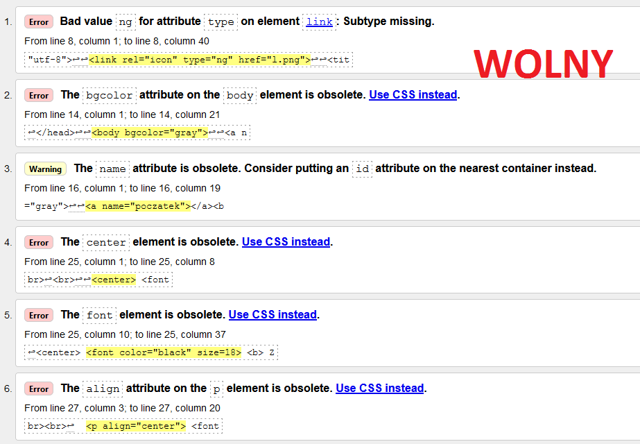
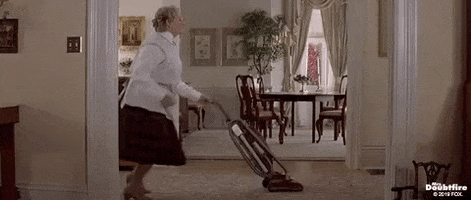

Link do strony głównej
Zad. 7
Co to jest walidator?
Walidator to program sprawdzający poprawność dokumentu o określonej składni.
Link do walidatora 
Link do poczty Link do ściągania pliku kliknij aby skoczyć w środek tekstu kliknij aby skoczyć na koniec tekstu Link do strony zawierającej tabelę Link do strony zawierającej formularz Link do strony głównej
Zad. 1
Łukasz Łukasz Łukasz Łukasz Łukasz Łukasz Łukasz Wolny Wolny Wolny Wolny Wolny Wolny Wolny :( smutek :) radość :'( płacz :C duży smutek ; ( inny smutek C: duża radość Zad. 2
12-432 Stegienka ul. Lumina 17,23
ULUBIONY AKTOR: BRYAN CRANSTON
ULUBIONY ZESPOL: Little Big
Data urodzenia:
13.styczen.2019
H2 O5 x2 *23 =567
Zad. 3 i 5
Żarty o wszystkim Żart o informatyku
Przyszły informatyk
nazwisko ucznia imię ucznia
Kowalski Jasiu
Żart o lekarzu
Dentysta sadysta
nazwisko ucznia imię ucznia
Nowak Karol
Link do poczty Link do ściągania pliku kliknij aby skoczyć na początek tekstu kliknij aby skoczyć na koniec tekstu Link do strony zawierającej tabelę Link do strony zawierającej fomrularz Link do strony głównej
Żart o babie
Baba zadrwiła ze sprzedawcy

Przychodzi do baby sprzedawca odkurzaczy, stawia odkurzacz na podłodze, podłącza go do prądu i mówi:
nazwisko ucznia imię ucznia
Urbaniak Krystian
Żart o Jasiu
Jasiu idzie do szkoły
Ojciec mówi do Jasia:
nazwisko ucznia imię ucznia
Gusztaw Max
Żart o Kasi
Śpiąca Kasia
Kasia zasypia na stojąco przed tablicą.
nazwisko ucznia imię ucznia
Kordecka Kasia
@?!*&%#
Zad. 4
Tematy
informatyczne cz. 1.
Najpopularniejsze systemy operacyjne na PC:
Windows 10 Windows 7 Linux MacOS Google Chrome WinRAR Word YouTube
RTX 3090 (cena: 13 000 PLN) RTX 3080 Ti (cena: 8 500 PLN) RTX 3080 (cena: 6 000 PLN) RTX 3070 Ti (cena: 5 000 PLN)
Teamty
informatyczne cz. 2.
Najpopularniejsze systemy operacyjne na telefony:
Android IOS Windows Mobile OxygenOS
RE: VILLAGE DOOM: Eternal GTA V Minecraft
INTEL Core i9-11900K (cena: 2 900 PLN) INTEL Core i9-11900KF (cena: 2 400 PLN) INTEL Core i9-11900 (cena: 1 950 PLN) INTEL Core i9-11900F (cena: 1 650 PLN)
Teamty
informatyczne cz. 3.
Popularne rodzaje dysków do komputera:
HDD
Parametry:
złącza: SATA, IDE- ATA
Szybkość obrotów: 7200 obr/min
pamięć podręczna: 64 MB
SSD (SATA)
Parametry:
złącza: SATA
szybkość odczytu: 500 MB/s
szybkość zapisu: 450 MB/s
SSD (M.2)
Parametry:
złącza: M.2 PCIe NVMe 3.0 x4, M.2 PCIe NVMe 4.0 x4
szybkość odczytu: 3000 MB/s
szybkość zapisu: 3500 MB/s / 4000 MB/s
szybkość odczytu: 3000 MB/s / 3500 MB/s
Zad. 6
Link do poczty Link do ściągania pliku Kliknij aby skoczyć na początek tekstu Kliknij aby skoczyć w środek tekstu Link do strony zawierającej tabelę Link do strony zawierającej fomrularz Link do strony głównej